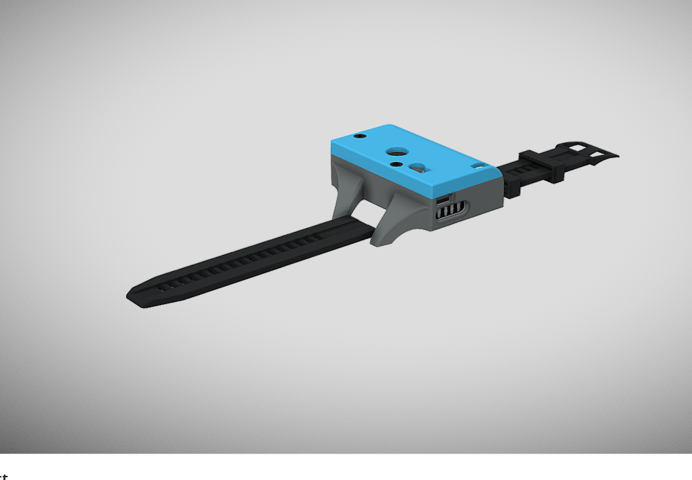
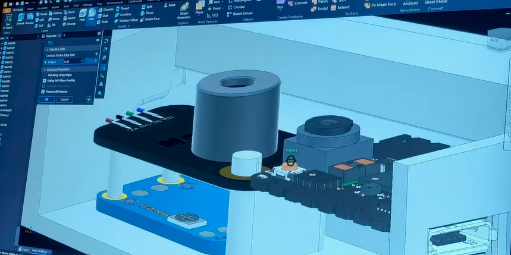
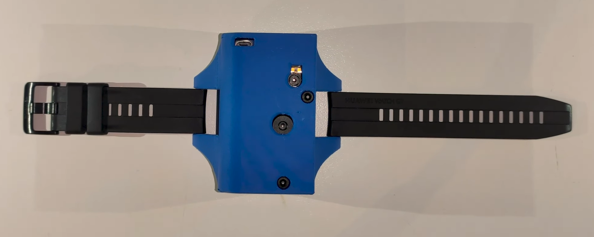
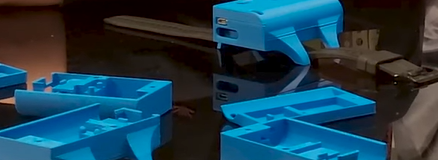

Overview
The Adaptive Visual Learner (AVL) is a wrist-worn assistive device designed to help visually impaired individuals navigate and interact with their environment independently. It combines heavily quantized ML object recognition models running on ultra-low-power hardware with temperature sensing and directional audio feedback — all packed into a compact, 3D-printed wearable form factor.
Key Features
- Object Recognition: Heavily quantized ML models optimized for low-power embedded hardware, enabling continuous object detection for up to a month on a single charge.
- Temperature Sensing: Integrated temperature sensor provides environmental awareness and hazard detection.
- Navigation Assistance: Provides real-time directional guidance to help visually impaired users navigate their surroundings safely and independently.
- Ultra-Low Power: Aggressive model quantization and power management enable month-long battery life — critical for a device meant to be worn daily.
- Wearable Design: Compact wristband form factor designed in CAD and 3D printed, housing the camera module, embedded board, sensors, and battery in an ergonomic enclosure.
Awards
- 1st Place, Inventive Students 2023 — National STEM Competition, University of Macedonia, Thessaloniki